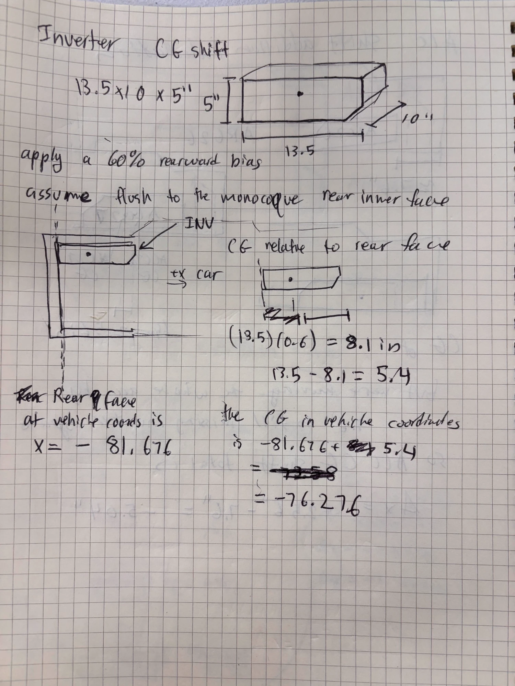

A preliminary calculation of how far the longitudinal CG moves on ARG27 as the accumulator and inverter change, and what that means for a 50/50 weight distribution.
Davis Rattanavijai · Last edited October 4, 2026
PreliminaryThe ARG27 accumulator and inverter CAD were not built or placeable in the car at the time of this calculation, so their ARG27 positions are estimates. See the assumptions.
1Context
For ARG27, the accumulator and inverter are being moved and both are getting lighter. We design the car to a 50/50 weight distribution, so if the longitudinal (front to rear) CG moves, we may have to shift the wheelbase to bring it back. This page calculates a preliminary estimate of that longitudinal CG shift.
Figure 1 ARG26 packaging, side view.Figure 2 Preliminary ARG27 packaging, side view, with the accumulator shown as an estimate.
2Methodology
Positions are x in vehicle coordinates, in inches, with +x pointing forward. All masses are sprung masses, so the ARG26 total (m26) is the total sprung mass of the car with the driver and x26 is its sprung CG.
2.1Assumptions
This calculation is preliminary. The ARG27 accumulator and inverter CAD were not built or placeable in the car at the time, so the ARG27 positions come from hand estimates instead of CAD.
The accumulator CG shift can be modeled with a rectangular analysis. The accumulator is treated as a rectangle with its CG in the middle. Its front face stays in the same place and the case grows rearward to within 50 mm of the monocoque rear inner face, so its CG moves back by half the added length.
The ARG27 inverter enclosure is a 13.5 × 10 × 5 in box sitting flush against the monocoque rear inner face. It has a 60% rearward weight bias, meaning 60% of its weight is in the rear part, so its CG sits 40% of its 13.5 in length from the rear face.
The ARG27 accumulator and inverter masses are estimates from the HV lead.
Everything other than the accumulator and inverter is lumped together as "other" and is the same on both cars.
With wheelbase L, the shift moves this much of the weight onto the front axle:
Δ(front %) = 100 × ΔxCG / L
3Results
3.1Inputs
Part
Mass (lb)
x (in)
ARG26 sprung mass with driver
470
−50.79
ACC26 (accumulator)
102
−64.00
INV26 (inverter)
34.17
−78.20
ACC27 (accumulator)
95
−66.64
INV27 (inverter)
16.53
−76.28
The ARG27 accumulator CG moves 2.64 in toward the rear, from x = −64.00 in to x = −66.64 in, because the case grows rearward into the space behind it. The ARG27 inverter sits flush against the monocoque rear inner face with its CG at x = −76.28 in, 1.92 in forward of the ARG26 inverter. See the appendix for where each input comes from.
The longitudinal CG moves 0.80 in forward. Moving the accumulator back pulls the CG rearward, but moving the inverter forward and taking 24.6 lb out of the two parts, which both sit behind the CG, has a bigger effect and pushes it forward.
3.4Effect on Weight Distribution
With the ARG26 wheelbase of 61 in, a 0.80 in forward shift moves about 1.3% of the weight onto the front axle:
Δ(front %) = 100 × 0.80 / 61 = 1.3%
So a car that was 50/50 would become about 51.3/48.7 front to rear.
4Error Sensitivity
The ARG27 masses and positions are estimates, so this section shows how much the CG shift changes if one of them is off. Each chart varies one input and keeps the others at their nominal values. All four charts use the same vertical scale, so a steeper line means the result depends more on that input. The nominal CG shift is +0.80 in. The right axis reads the same CG shift as the change in front weight percentage from section 3.4: Δ(front %) = 100 × ΔxCG / 61.
Input
Error range
CG shift range
Change in CG shift
ACC27 mass
−10 to +10 lb
+0.44 to +1.18 in
−0.037 in per lb
ACC27 CG, x
−2 to +2 in
+0.37 to +1.23 in
+0.213 in per in
INV27 mass
−5 to +5 lb
+0.51 to +1.10 in
−0.059 in per lb
INV27 CG, x
−2 to +2 in
+0.73 to +0.88 in
+0.037 in per in
The slopes in the last column come from differentiating the ARG27 CG equation. For a part i, the accumulator or the inverter, moving its CG by 1 in moves the car's CG by its share of the total mass, and adding 1 lb pulls the car's CG toward that part by its distance from the CG divided by the total mass:
∂ΔxCG / ∂xi = mi / m27
∂ΔxCG / ∂mi = (xi − x27) / m27
With m27 = 445.36 lb and x27 = −49.988 in:
ACC27 CG, x: 95 / 445.36 = +0.213 in per in
ACC27 mass: (−66.64 − (−49.988)) / 445.36 = −0.037 in per lb
INV27 CG, x: 16.53 / 445.36 = +0.037 in per in
INV27 mass: (−76.28 − (−49.988)) / 445.36 = −0.059 in per lb
The position lines are straight. The mass lines curve slightly because the mass also appears in m27, so their slope is given at the nominal mass.
The accumulator CG position matters most: every inch it is off changes the CG shift by about 0.21 in. The inverter CG position matters least. Going from a 50% to a 70% rearward weight bias only moves the CG shift between +0.75 and +0.85 in.
Chart 1 ACC27 mass, nominal 95 lb.Chart 2 ACC27 CG x, nominal −66.64 in.Chart 3 INV27 mass, nominal 16.53 lb.Chart 4 INV27 CG x, nominal −76.28 in. Labels mark the CG for rearward weight biases of 70% to 50%; 60% is nominal.
5Remedy: Moving the Axles
For 50/50, the CG has to sit at the midpoint between the front and rear axles. Since the CG moves forward 0.80 in, we move both the front and rear axles forward 0.80 in. The midpoint moves with them, the car goes back to 50/50, and the wheelbase stays at 61 in.
AAppendix: Input Sources
Input
Value
Source
ARG26 sprung mass with driver
470 lb
Sprung mass without the driver, 320 lb, plus a driver weight of 150 lb.
ARG26 sprung CG, x
−50.79 in
The car is designed to 50/50, so the CG is half the wheelbase behind the front axle: −20.289 − 61 × 0.5 = −50.789. Front axle location from CAD (Figure 3).
ACC26 mass
102 lb
ARG26 weight budget, accumulator current weight of 46.266 kg (Figure 12).
ACC26 CG, x
−64.00 in
iProperties of the accumulator master assembly in CAD, −1625.284 mm (Figure 4).
INV26 mass
34.17 lb
ARG26 weight budget, inverter current weight of 15.5 kg (Figure 13).
INV26 CG, x
−78.20 in
iProperties of the inverter enclosure assembly in CAD (Figure 5).
ACC27 mass
95 lb
Estimate from Aryaman (HV lead).
ACC27 CG, x
−66.64 in
Rectangular approximation of the accumulator. The front face stays in place and the case grows rearward into the 7.25 in gap between the ARG26 accumulator and the monocoque rear inner face (Figure 7), leaving 50 mm of clearance: 7.25 in − 50 mm = 5.28 in (134.15 mm), close to the estimated 130 mm size change. The CG moves back by half of that, −2.64 in, from the ACC26 CG (Figure 6).
INV27 mass
16.53 lb
Estimate of 7.5 kg for the new inverter from Aryaman (HV lead).
INV27 CG, x
−76.28 in
ARG27 inverter enclosure is 13.5 × 10 × 5 in (Figure 10, Figure 11), assumed flush to the monocoque rear inner face at x = −81.676 in (Figure 9). With a 60% rearward weight bias, the CG is 13.5 − (13.5)(0.6) = 5.4 in forward of the rear face: −81.676 + 5.4 = −76.28 in (Figure 8).
Wheelbase, L
61 in
From our design. Kept the same on ARG27.
Figure 3 ARG26 front axle location in CAD, x = −20.289 in.Figure 4 iProperties of the ARG26 accumulator master assembly, CG x = −1625.284 mm (−64.00 in).Figure 5 iProperties of the ARG26 inverter enclosure assembly, CG x = −78.20 in.Figure 6 Hand calculation of the ACC27 CG shift. The accumulator grows rearward to within 50 mm of the rear inner face, so its CG moves back half the added length. The sketch uses 7.2 in; the results use the CAD measurement of 7.25 in (Figure 7), which gives −2.64 in.
Figure 7 Distance between the ARG26 accumulator and the monocoque rear inner face measured in CAD, 7.25 in.

Figure 8 Hand calculation of the INV27 CG. The enclosure sits flush to the monocoque rear inner face with a 60% rearward bias, so its CG is 5.4 in forward of it, x = −76.28 in.
Figure 13 ARG26 weight budget, powertrain peripherals weight targets.Figure 14 Whiteboard sketches mapping out the initial work on the accumulator and inverter changes.Figure 15 Whiteboard sketches comparing the ARG26 and ARG27 accumulator layouts.